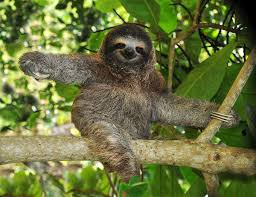

Sloths are cool animals that dangle from trees using their arms. They expand their habitats about once a week by making their way to ground levels for some self care before returning to their humble abodes.
There are two types of slothes. They can be differentiated by the number of claws on their front limbs.
Presently, slothes are about the size of a medium-sized dog. Historically, slothes used to be as large as an Asian elephant. The mega-sloths became an extinct species around 10,000 years ago.
Sloths posses a natural camouflage representing a symbiotic relationship with the algae that grows on their fur. The sloth provides the shelter and water necessary for the algae to develop on the surface, and the algae provides a natural protective layer of camouflage on the sloth. The algae also provides additional nutrients through the skin.
Information sourced from The World Animal Protection Website.
HTML Sloth fanpage created by Macenna, 2020.